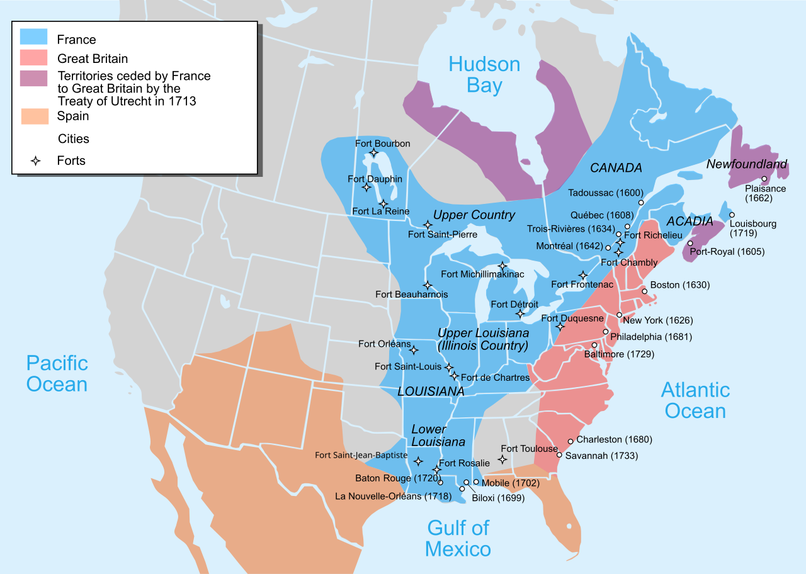
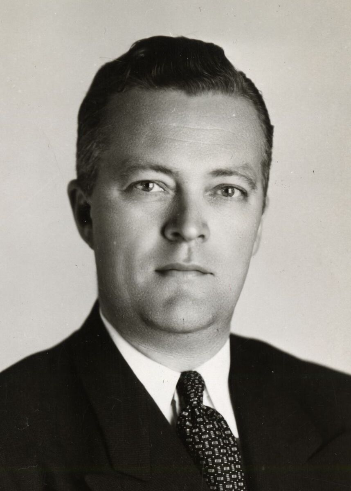

La Nouvelle-France
En 1534, Jacques Cartier arrive à Gaspé. Plus tard, en 1608, Samuel de Champlain fonde Québec. Avec l’installation durable de la Nouvelle-France, le français s’implante en Amérique du Nord. Les colons viennent de différentes régions de France, comme la Normandie, l’Île-de-France et l’Ouest, ce qui crée dès le départ une certaine diversité linguistique.
Dans ce contexte colonial, le français devient la langue de l’administration, du commerce et de la vie quotidienne des colons. Il évolue cependant dans un environnement nouveau, marqué aussi par les contacts avec les peuples autochtones.

La domination britannique
Après la conquête de 1759–1760, puis le traité de Paris de 1763, la Nouvelle-France passe sous domination britannique. Malgré ce changement de pouvoir, le français ne disparaît pas. L’Acte de Québec de 1774 permet notamment de conserver le droit civil français et la religion catholique, ce qui aide à préserver une partie importante de la culture canadienne-française.
Le français reste alors très présent dans les familles, la religion, l’école et les traditions. Peu à peu, il devient non seulement une langue parlée, mais aussi un symbole de continuité historique et d’identité collective.
Avant la Révolution tranquille
Au XXe siècle, le Québec est marqué par d’importantes inégalités linguistiques. Dans plusieurs secteurs économiques, les anglophones occupent des positions dominantes, tandis que les francophones ont souvent moins de pouvoir et gagnent moins. La langue devient donc un enjeu non seulement culturel, mais aussi social et économique.
La Révolution tranquille

En 1963, la nationalisation des compagnies d’électricité privées marque un tournant économique majeur. Ce processus favorise la francisation de l’industrie et ouvre de nouvelles opportunités pour les francophones, qui accèdent désormais à des postes de direction jusque-là réservés aux anglophones.
En 1964, l’établissement du ministère de l’Éducation transforme profondément la société québécoise. L’enseignement, précédemment administré par l’Église catholique, passe sous l’autorité de l’État, amorçant ainsi une sécularisation durable de la société québécoise.